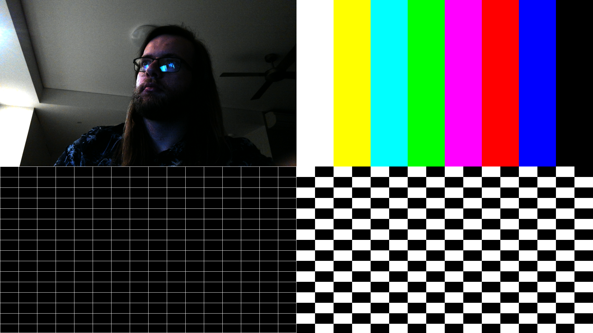

Untearing, Retearing The Frame.
Getting rid of the HDMI frame tearing on the KV260, then deliberately cutting the frame into four.
Untearing
At the end of Making the photons loop I said I'd come back for the HDMI frame tearing another day, so here we are. The camera picture was arriving on the monitor with a visible horizontal seam - the top part from one frame and the bottom from the next - which is exactly what my quintuple-buffered design was supposed to prevent, so the first question to gpt was where all those buffers had gone.
The answer was that the capture side did have its five buffers, but the display side wasn't playing along. The launcher was running GStreamer's kmssink with skip-vsync=true, meaning it would put a new buffer on the display plane without waiting for the monitor's refresh, and it could also hand the previous buffer back to the pool straight away. Hand a buffer back while HDMI is still scanning it out, and the capture side cheerfully writes the next frame into it mid-scan - hence half of one frame and half of another.
Just turning vsync on in the ordinary launcher wasn't enough; it still tore. What fixed it was a small C program, buffered-display, that changed three things at once:
skip-vsync=false, so a new frame only goes on screen at the refresh;hold-extra-sample=true, so the display hangs onto the previous buffer until its replacement is actually showing;- a probe that forwards the display's buffer-allocation request back up through the pipeline to the capture side, asking for a minimum of five - so the quintuple buffering is finally sized by the thing that actually needs it.
With all three in place the camera ran raw 1080p straight into the display at about 20 FPS, and the seam was gone. I'll admit we never established which of the three was doing the heavy lifting, since only the combination was tested - it was buffers, it's always buffers, and I left it alone once it worked.
Retearing
The design has four capture lanes. Only one has a camera on it so far; the other three have had test-pattern generators sitting in for cameras since First Contact. With the display behaving, the obvious next thing was to put all four on screen at once, i.e. tear the frame again, but on purpose and along straight lines.
Each lane's capture graph was reconfigured down from 1920×1080 to 960×540, so four of them tile a 1080p screen exactly. A Python GStreamer script, quad-display.py, opens all four video nodes, sets the three TPGs to colour bars, crosshatch and checkerboard, and feeds them into a compositor: camera top-left, bars top-right, crosshatch bottom-left, checkerboard bottom-right. The output goes to the same kmssink settings that fixed the tearing, plus a side branch that saves one PNG per second so I could pull a screenshot off the board.
The frame rate dropped to 10 FPS, deliberately. The compositor is GStreamer's software one, so the board's Arm cores are doing the mixing, and asking them to blend four streams into a 1080p frame thirty times a second seemed optimistic. Rather than let each lane drop frames whenever it fell behind, the script keeps exactly every third buffer from each source (3, 6, 9, ...) and throws away the other two before they reach the compositor, so all four inputs are thinned the same way and the output runs at a steady ten. The camera was delivering about 26-28 FPS, so it lands at around 9.
The TPGs, meanwhile, turned out to be producing frames at something like 200 per second rather than the 30 they were meant to. They're little hardware blocks that spit out the same picture over and over, and evidently nobody told them to pace themselves - I'd guess they should have been configured for 30 when they were instantiated in the design, and weren't. An attempt at fixing it by adjusting their blanking didn't get there. Since every third of 200 is still more than ten, the compositor simply takes whatever is newest, so it doesn't matter for this view, but it's on the list.
Then I sat in front of it and took a screenshot.

That's the camera looking at me looking at the screen, with the test patterns reflected in my glasses. Next up is putting actual cameras on the other three lanes.
□